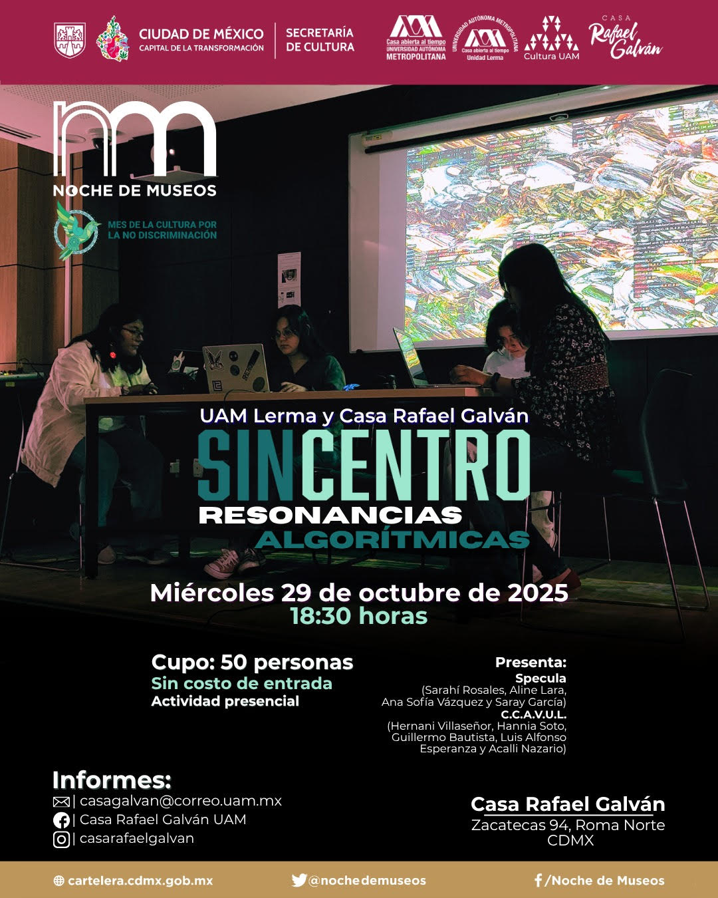

En la Casa Rafael Gaván UAM, el día 29 de octubre de 2025.

C.C.A.V.U.L. se presentó conformado por Hannia, Guillermo, Alfonso, Acalli y Hernani.
Como parte del ciclo SinCentro y Noche de Museos y junto al colectivo Specula.